class: center, middle, inverse # Circle Fit ### 30th August 2018 --- ## Random Data of Circular Absorber - To develop a method to find the shadow of a circular absorber on the detector the data needs to be well understood - Below, an examplary image of a measurement is shown. Dead pixels are not deactivated in this case, but usually are - Find MC method to generate random images for absorber at certain position - In the following approaches, only the photoelectric effect is considered. Charge sharing between neighboring pixels is neglected <p style="text-align:center;">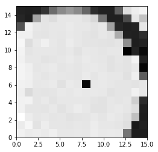</p> --- ## 1st Approach: Direct Shadow Generation (fast) - Poisson distribute `\(N\)` events on complete pixel matrix - Draw coordinates from a Gaussian broadened circle and remove them from the pixel matrix - Reversed implementation of Franzi's circle fit routine <p style="text-align:center;"> 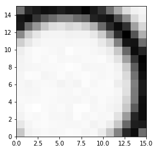 </p> `\(\rightarrow\)` Approximation: parallel beam geometry `\(\rightarrow\)` Shadow edges are too soft in this model --- ## 2nd Approach: Ray Tracing (slow) - A point source is put at a certain position in front of the detector. Beams are sampled within a pyramidal volume. Attention: end points of normalized direction vectors need to be uniformly distributed on a unit sphere - A torus is placed between source and detector - For each beam, it is checked if an intersection took place - If so, intersection points and therefore distance through the absorber is calculated - Absorption probability is determined via Beer-Lambert's law and survival of beam is judged using a random binomial number - If a beam hits a pixel, its count is incremented <p style="text-align:center;"> 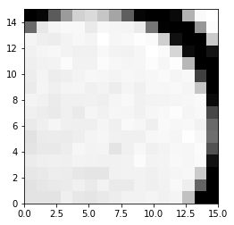 </p> --- ## 2nd Approach: Ray Tracing (slow) ### Advantages: - Judging by eye: MC and data match well - Inverse square law is considered inherently. Note: Absorber is centered in MC but shifted in data. Therefore, images on previous slide are not directly comparable ### Disadvantages: - Method is slow since each beam needs to be checked for intersections - Area of pyramidal beam has to be larger than the detector's surface since distortions take place when irradiating under large angles. This is a consequence of the uniform beam distribution --- ## 3rd Approach: Sampling - Divide the detector matrix into a smaller submatrix - Instead of single beams, sample beam bundles with `\(N\)` entries for each subpixel. Calculate vector from source to subpixel - Get distance from subpixel to source and correct number of events via inverse square law - Check for intersections with the absorber. If intersections took place, sample number of surviving events per beam bundle - Finally, apply pooling to get correct number of pixels <p style="text-align:center;"> 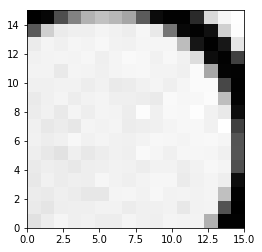 </p> - Disadvantage: Not able to grasp fine structures in absorber or at an expense of performance - Advantage: Basically yields same results as previous method but is a lot faster --- # Sampling Method: Examples <p style="text-align:center;"> 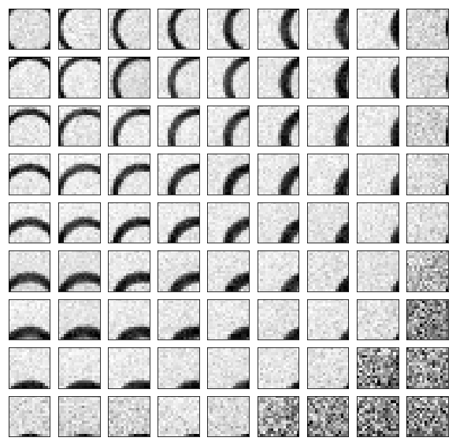 </p> --- ## Source Position Reconstruction Need a quick method to reconstruct the direction of the source - Fit approach: Find absorbers shadow using an analytic model in a fit. `\(\rightarrow\)` Works well, but not responsive enough in some cases - Deep learning approach: Deep Convolutional Neural Network (DCNN) `\(\rightarrow\)` If it works, very responsive --- ## Preparation of MC Data Generate many images for random source positions Attention must be paid when sampling the positions: high point density increases importance of a region (may be a wanted effect) `\(\rightarrow\)` Distribute uniformly in spherical coordinates <p style="text-align:center;"> 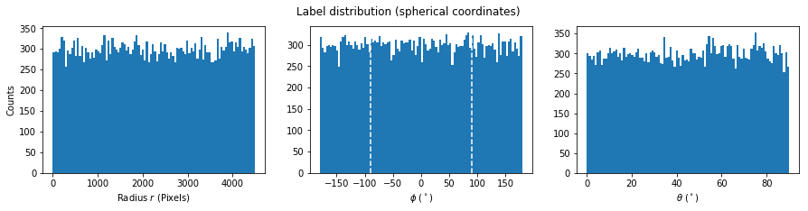<br> </p> --- ## Preparation of MC Data (Cartesian Coordinates) Conversion to Cartesian coordinates <p style="text-align:center;"> 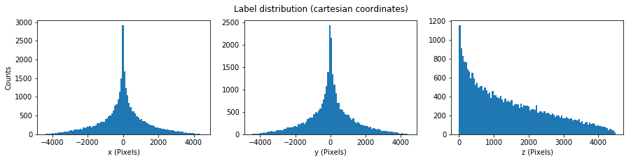<br> 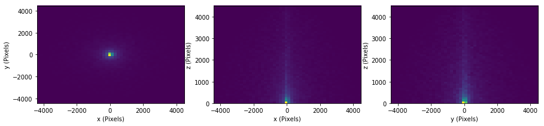 </p> --- ## Data Augmentation Easily generate more training data via augmentation. Use existing images and labels and manipulate them by: - multiple rotations about `\(90^\circ\)` - mirroring at the `\(x\)`- and `\(y\)`-axis Another option is to generate initial images without noise and to apply augmentation: - modify total number of counts in the image - resample the noise per pixel <p style="text-align:center;"> 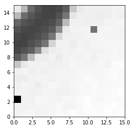 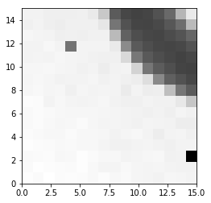 </p> --- ## circleLearn: Single Detector Use MC data of a single detector w/ circular absorber ### Data: - 250k events for different source positions, distributed uniformly in spherical coordinates - First test: source within short distance to the detector (about 10 cm) - Applied augmentation to obtain more training data - Sampled dead pixels into the images to gain robustness ### Model Definition: - Batch size of 100 images - Input images of shape 16 x 16 - 10 convolutional layers with a kernel size of 3 x 3 each and filter sizes of 2 x 8, 2 x 16, 2 x 32, 2x 64 and 2 x 128 - To prevent overtraining: - Batch normalization after each convolutional layer - L2 regularization - Flattening layer with succeeding dense layers of sizes 64, 32, 8 and finally 2 in order to perform regression on angles `\(\phi\)` and `\(\theta\)` - No pooling applied since image size is small --- ## First model <p style="text-align:center;"> 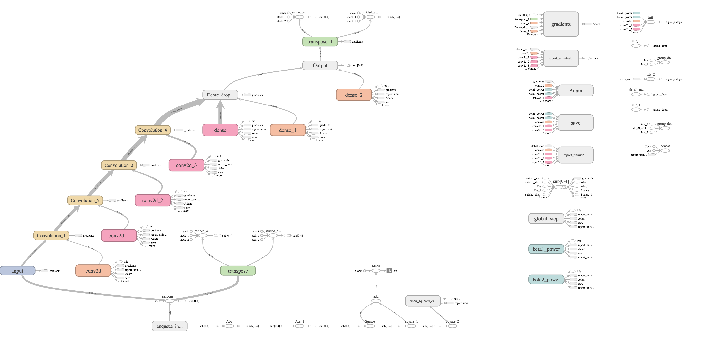<br> </p> --- ## Improved model <p style="text-align:center;"> 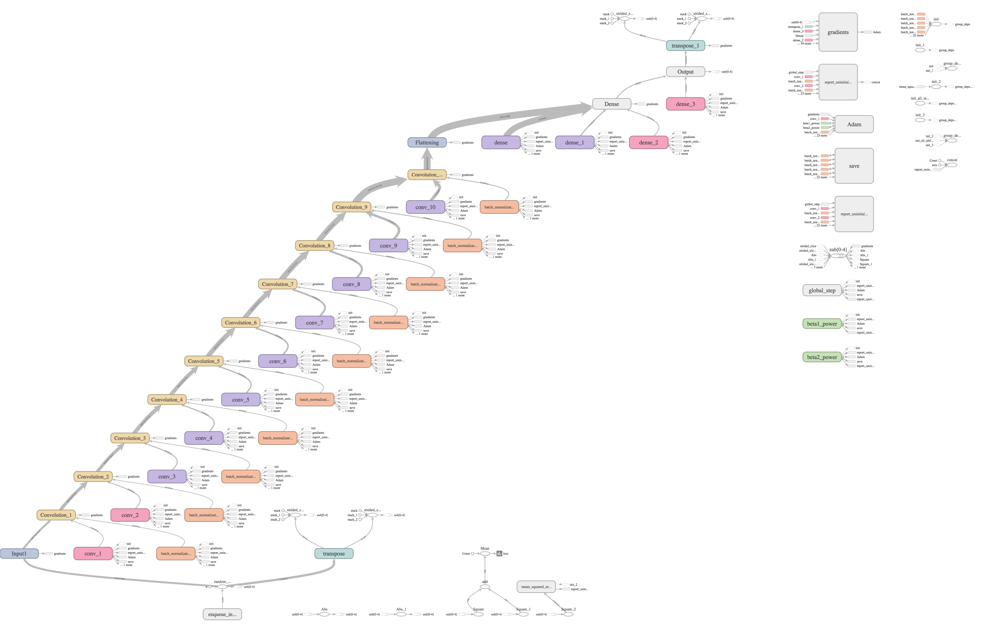<br> </p> --- ## Results - Apply trained network to measurement data - Currently, data and MC do not match since circular detector was not centered during measurements - Arrows point in direction of the source `\(\rightarrow\)` On first sight: seems to work - Mean deviation of `\(\theta < 1^\circ\)`, similar to regular fit <p style="text-align:center;"> 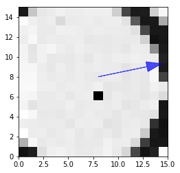 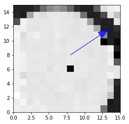 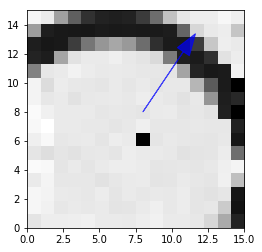 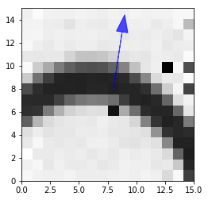 </p> --- ## CircleLearn: Multi - Let's try stereoscopic vision `\(\rightarrow\)` Improvement of precision - Slightly tilt detectors, place origin at the center of the system <p style="text-align:center;"> 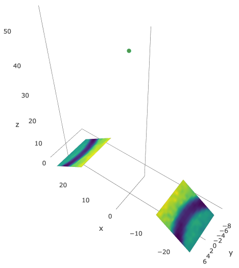 </p> --- ## CircleMulti: MC Data - Like previously, generate random source positions uniformly in spherical coordinates - Coordinates are sampled so a shadow is visible `\(\rightarrow\)` Works for about 90% of all image sets - Additionally, filter by visibility via histograms of each image `\(\rightarrow\)` Check condition which median and mean have to fulfill - If no shadow is visible, discard event for trainig. Here, - source either not in field of view - or number of counts too low (i.e. no harm for the user) <p style="text-align:center;"> 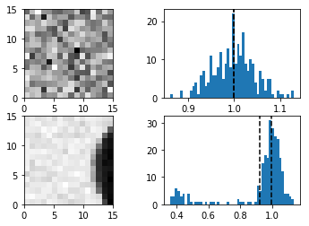 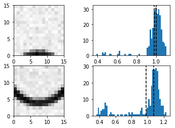 </p> --- ## CircleMulti: MC After Filtering <p style="text-align:center;"> <img src="images/spherical_dist_vis.png" alt="isCircle_2" width="800px" align="middle"/><br> 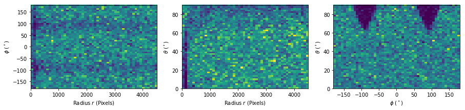 </p> --- ## CircleMulti: Examples - Network model similar to two single detector models. Each image is processed by a branch and results are concatenated prior to the dense layers - Examples show evaluation after training on MC data. Dark arrow indicates the the true label of `\(\phi\)` - Center image shows deviation since source is directly above the origin <p style="text-align:center;"> 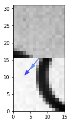 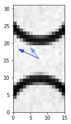 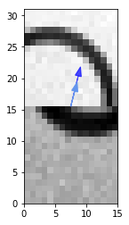 </p> --- ## CircleMulti: Results - Restrict source positions within a range of 1m to the origin of the system - Important: Normalize radius of source position so it lies in the same range as the angles `\(\rightarrow\)` Otherwise biasing of a coordinates is introduced - Plots show deviation, i.e. difference, of coordinates `\(\rightarrow\)` Symmetric exponential decay since deviation is difference of uniformly distributed values <p style="text-align:center;"> 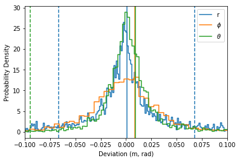 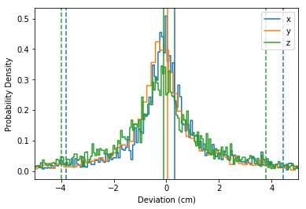 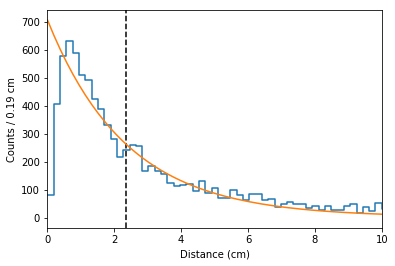 </p> --- ## CircleMulti: Results (Radial Dependence) <p style="text-align:center;"> 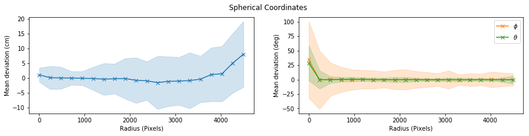 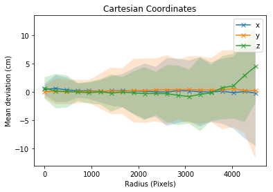 </p> --- ### CircleMulti: Source Movement Example <p style="text-align:center;"> <video width="320" controls autoplay> <source src="images/vid1.mp4" type="video/mp4"> </video> <video width="270" controls autoplay> <source src="images/vid3.mp4" type="video/mp4"> </video><br> <video width="620" controls autoplay> <source src="images/vid2.mp4" type="video/mp4"> </video> </p>